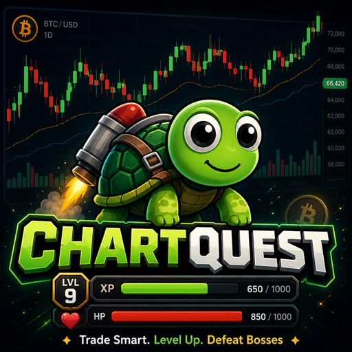

⚜ ENTER THE MARKET ▸
SKIP ▸
✕

SIGN IN
SIGN UP
Welcome back
I agree to the
Privacy Policy
and
Terms
. This says what we keep safe.
Connecting…
SIGN IN
Play as Guest — saves on this device
YOUR ACCOUNT
Guest
🌊 DRIFTER
⚡ Change Chart
🐞 Report a Bug
Submit
Thanks — bug reported!
Sign out
Close
🔥 TRAINING
📓 JOURNAL
🐠 WALLET
👤
🔍 SCANNER MODE
✕
🐠 SHELL WALLET
CLOSE ✕
TRADING CAPITAL
0
Shells are your trading capital. Trade well to grow it.
LIFETIME STATS
RECENT ACTIVITY
⚡ SETUP FORMING — FLY INTO THE PORTAL
✕
⚡ TRADE INCOMING ⚡
Watch the chart — your trade is about to appear
🛡️ HOLD YOUR PLAN
✕
TRADE SETUP CHART
TAP ANYWHERE TO CLOSE
Read the chart — which way next?
📈 UP
📉 DOWN
TRADE SETUP
📓 CHECK YOUR NOTEBOOK FIRST
✕
▲ LONG
▼ SHORT
🛡️ Stop & size are handled for you — just pick a direction.
RISK
1.0%
AMOUNT
SHELLS
STOP LOSS
—
TAKE PROFIT
—
LEVERAGE
REWARD : RISK
—
USE RECOMMENDED
CONFIRM TRADE
CONTINUE
📓 TRADER'S JOURNAL
👤 SIGN IN
✕
📖
KNOWLEDGE
💭
WISDOM
📊
TRADES
⚔
GUARDIANS
🧑
YOU
📝
NOTES
🔥 TRAINING DRILLS
CLOSE ✕
Optional training. The chart teaches through experience — the drills sharpen your edge.
🔥 0 day streak
×1.0 Shells
TAP TO ENTER →
🎵
📓 NOTEBOOK
📈 UP
📉 DOWN
Your chart determines which
real live market
you'll trade on. All charts, boss fights, and lessons will reflect your chosen coin.
★ Recommended start: Bitcoin
You can change this later from your account.
Practice Library
BETA
Learn by doing. Drill the real skills, any time.
🔍
‹ Library
SUBMIT
↻ Try again
Library →